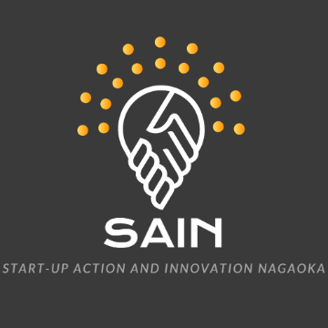

About Me
- 東京農工大学大学院農学府農学専攻修士課程1年
- 株式会社ぽてともっとエンジニア・マーケター
- 上脇優人 / Yuto Kamiwaki
1997年3月生，22歳．サレジオ工業高等専門学校電気工学科、長岡技術科学大学工学部電気電子情報工学課程を経て，2019年4月より東京農工大学大学院農学府農学専攻食農情報工学コース食農情報工学プログラム修士課程1年在籍．2017年より株式会社CuboRexに参画し，株式会社ロレムイプサム，任意団体SAIN等を経て2019年4月より株式会社ぽてともっとに参画．
専門は農業機械学，農業情報学，農業施設学，知能機械学，情報システム学．高専ではモンゴル国における植物工場システムの構築に関する研究に従事．大学では感情表現辞書の構築等の自然言語処理に関する研究に従事．大学院では小型ロボットを用いた自律的な農作業システムの構築に関する研究に従事している．
2017年にJames Dyson Award 2017国際TOP20および国内第3位受賞他，ビジネスコンテスト等での入賞多数．また，長岡技術科学大学学長表彰やサレジオ工業高等専門学校校長賞および卒業研究優秀賞等，学内での受賞多数．
Portfolio
- 

Research
学位論文（高専の卒業研究を含む）
- 学士（工学） 読み曖昧性解消のためのデータセット構築における一音語選定手法，2019
- モンゴル高専との連携によるAmazon Web Serviceを用いた水耕栽培システムの構築，2017
国際会議（査読あり、ポスター発表）
- Yuto Kamiwaki，Osamu Arihuku，Uranzev Tsogbadrakh，Namuunbaigali Barsbaatar，Mitsumasa Ito，A Joint Research between Salesian Polytechnic Tokyo and Mongol KOSEN on Development of Hydroponic system using the M2M/IoT technology，International Conference of East-Asian Association for Science Education(Tokyo University of Science)，26P1X-14，2016
全国大会・シンポジウム・研究会等（査読なし，口頭発表）
- 上脇優人，吉田久展，帖佐直，東城清秀．水稲湛水直播ロボットの開発（第一報）螺旋式推進装置の検討．農業食料工学会・農業施設学会・国際農業工学会第6部会 合同国際大会，2019
- 寺嶋瑞仁，上脇優人，雪道で走行可能な小型電動モビリティーの農業応用 －Cuboard の開発とクローラユニットシステムの応用事例－，農業食料工学会第76回年次大会(東京農業大学)，講演番号7-3，2017
- 越宗廉, 上脇優人, 市村洋, 伊藤光雅, モンゴル高専との連携によるAWSとM2Mを活用した水耕栽培システム構築 -水耕栽培システム構築に向けたハイブリッド型電源の製作-, 日本工学教育協会, 第65回工学教育講演会, 3F17, 2017
- 上脇優人，有福修，伊藤光雅，モンゴル高専との共同研究によるAmazon Web Serviceを活用した水耕栽培システムの構築，電子情報通信学会2017年総合大会(名城大学)，講演番号D-9-43，2017
- 上脇優人，有福修，伊藤光雅，日豪の高専学生共同によるAmazon Web Serviceを活用した水耕栽培システムの構築，第22回高専シンポジウムin三重(鳥羽商船高等専門学校)，講演番号F-04，2017
- 上脇優人，有福修，Erdene OYUN，井上雅裕，市村洋，伊藤光雅，モンゴル高専との連携によるM2M/IoT技術を活用した水耕栽培システムの構築，日本工学教育協会第64回工学教育講演会(大阪大学)，講演論文集pp.472-473，2016
- 上脇優人，有福修，オユンエレデネ，伊藤光雅，モンゴル高専との学生共同によるM2M技術を活用した水耕栽培システムの構築，M2M/IoT利活用人材育成シンポジウム（東京大学），講演要旨集pp.14-15，2016
- 有福修，上脇優人，大野淳之介，伊藤光雅，サレジオ高専とモンゴル高専との学生共同によるM2Mシステムを用いた水耕栽培機の研究，日本科学教育学会研究会研究報告（東京学芸大学），講演要旨集pp.11-14，2015
- 上脇優人，大野淳之介，有福修，オユンエレデネ，伊藤光雅，サレジオ高専とモンゴル高専との連携による水耕栽培遠隔監視システムの研究，第21回高専シンポジウムin香川（丸亀市民会館），講演番号H-21，2015
- 大野淳之介，上脇優人，有福修，オユンエレデネ，伊藤光雅，サレジオ高専とモンゴル高専との学生共同によるPWM制御回路を用いた水耕栽培装置の製作，第21回高専シンポジウムin香川（丸亀市民会館），講演番号H-20，2015
- 中丸靖崇, 内藤和希，大野淳之介, 上脇優人, 伊藤光雅, サレジオ高専におけるアクティブラーニングとしての理科教室の実施とその効果, 日本工学教育協会第62回工学教育講演会（広島大学）, 講演論文集pp. 368 - 369, 2014
- 大野淳之介, 上脇優人, 中丸靖崇, 内藤和希, 伊藤光雅, モンゴル工業技術大学での理科教室の実施に向けた現地教員への事前教育, 日本工学教育協会第62回工学教育講演会（広島大学）, 講演論文集pp. 362 - 363, 2014
- 有福修, 内藤和希, 上脇優人, 中丸靖崇, 大野淳之介, 伊藤光雅, サレジオ高専と海外教育機関と連携した理科教室の展開, 日本理科教育学会第64回全国大会（愛媛大学）, 講演論文集p.477, 2014
- 上脇優人, 大野淳之介, 内藤和希, 中丸靖崇, 有福修, 伊藤光雅, モンゴル工業技術大学での理科教室に向けた現地教員と学生ティーチングアシスタントとの事前準備活動, 日本理科教育学会第64回全国大会（愛媛大学）, 講演論文集p.447, 2014
- 内藤和希, 中丸靖崇, 上脇優人, 大野淳之介, 有福修, 伊藤光雅, 海外教育機関と連携した学生ティーチングアシストを活用した理科教室の展開と効果, 日本理科教育学会第64回全国大会（愛媛大学）, 講演論文集p.446, 2014
全国大会・シンポジウム・研究会等（査読なし，ポスター発表）
- 鹿毛涼太，上脇優人，伊藤光雅，日・豪での高専学生連携によるAWSを用いた水耕栽培システムの構築－水耕栽培システム用のハイブリット型電源の製作－，第23回高専シンポジウムin神戸(神戸市立工業高等専門学校)，講演番号PI-020，2018
- 有福修，森タケル，上脇優人，伊藤光雅，サレジオ高専とモンゴル高専の学生共同によるM2M技術を活用した多段式水耕栽培機の製作，第23回高専シンポジウムin神戸(神戸市立工業高等専門学校)，講演番号PI-004，2018
- 大野秀樹，清水鏡介，小嶋春輝，上脇優人，作ろう・見よう～未来の電気の使い方～，第6回大学コンソーシアム八王子学生発表会（八王子市学園都市センター），講演要旨集pp.130-131，2014
その他の講演など
- アグリビジネス創出フェア2019，2019
- 農学のすすめ＠高専シンポジウム，2019
- サレジオ高専にてモンゴル高専の学生へ向けたAWSやIoTを用いた水耕栽培についての講義，2019
- 長岡市定例記者会見の活動報告，2018
- サレジオ高専にてモンゴル高専の学生へ向けた水耕栽培についての講義，2018